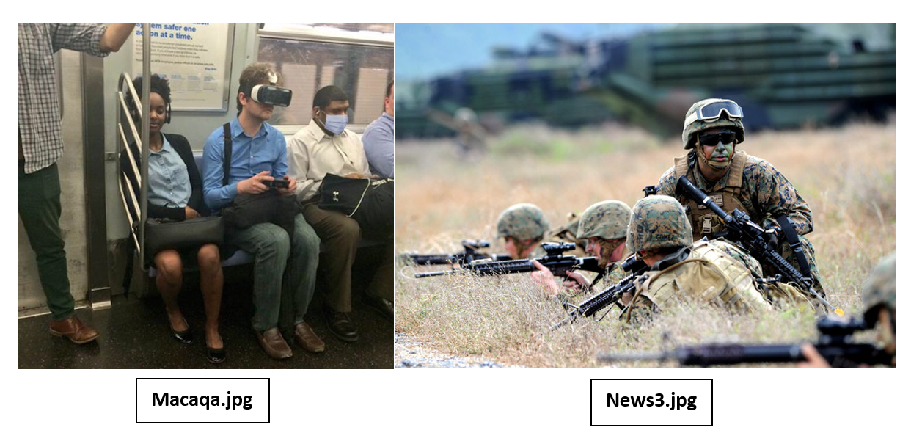
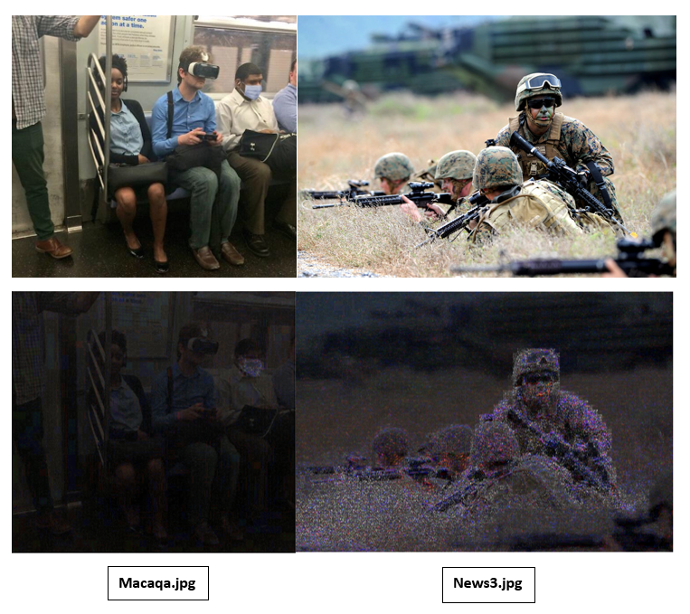

Digital Forensik adalah suatu ilmu pengetahuan dan keahlian untuk mengidentifikasi, mengoleksi, menganalisa dan menguji bukti–bukti digital pada saat menangani sebuah kasus yang memerlukan penanganan dan identifikasi barang bukti digital.
Forensik digital (Digital forensics) (juga dikenal sebagai ilmu forensik digital) adalah salah satu cabang ilmu forensik, terutama untuk penyelidikan dan penemuan konten perangkat digital, dan seringkali dikaitkan dengan kejahatan komputer. Istilah forensik digital pada awalnya identik dengan forensik komputer tetapi kini telah diperluas untuk menyelidiki semua perangkat yang dapat menyimpan data digital.
Perkembangan foto yang semakin maju membuatnya memiliki banyak keunggulan dan kekurangan, salah satunya adalah mudahnya dimanipulasi dengan software editing. Perubahan foto dapat dibuat atau diedit dengan mudah, sehingga dapat merubah informasi yang disampaikan menjadi berbeda dan membuatnya rawan digunakan untuk tindak kejahatan.
Forensik citra digital merupakan salah satu metode ilmiah pada bidang penelitian yang bertujuan untuk mendapatkan fakta-fakta pembuktian dalam menentukan keaslian image.
a. Exif Metadata
Setiap foto memiliki “exif/metadata”, yaitu “rekaman aktivitas” foto.
Jika foto itu asli, dari camera smartphone atau DSLR, maka akan ada informasi merk camera, pemakaian ISO, focal length, flash, dll. Jika geotag diaktifkan, bisa diketahui juga di mana foto tersebut diambil. Asalkan belum diedit.
Bisa menggunakan online tool “Jeffrey’s Image Metadata Viewer“. Metode ini tidak berdaya pada foto yang beredar di media sosial, karena foto yang di media sosial sudah dianggap tidak asli. Metadata dapat diubah dengan mudah, misalnya dengan Exif Tool untuk read, write, dan edit exif/metadata.
b. Error Level Analysis (ELA)
Error Level Analysis (ELA), adalah sebuah cara untuk mengetahui adanya modifikasi atau tidak pada sebuah image. Khususnya untuk image beraketsi JPEG, maka seluruh bagian dari image seharusnya memiliki nilai kompresi yang sama. Bila ditemukan bagian dari image dengan perbedaan ELA yang sangat siknifikan maka dapat diduga adanya upaya modifikasi pada bagian tersebut.
c. Pola Ketajaman Pixel
Pada dasarnya, suatu gambar yang asli harusnya punya pola yang sama. Untuk melihat ketajaman pixel ini bisa diperbesar atau di zooming. Saat di zooming biasanya akan terlihat pola kotak-kotak yang kemudian disebut pixel.
Study case ini diminta untuk menyelidiki kedua gambar di bawah apakah asli atau telah mengalami modifikasi. Jika telah dimodifikasi, perubahan apa yang dilakukan, bagaimana jawaban tersebut ditemukan dan menggunakan metode apa. Pada kasus ini kita menggunakan metode Error Level Analysis (ELA) dengan bantuan tools ForensicallyBeta.

| - Macaqa.jpg | : cerita tentang 3 makaka yang "Hear Nothing, "See Nothing", dan "Say Nothing" dalam sebuah foto di dalam kereta |
| - News3.jpg | : sebuah foto yang diambil dari dalam sebuah media berita online. |
Langkah Analisis
- Buka situs ForensicallyBeta atau klik tautan ini
- Setelah itu, upload foto yang hendak diidentifikasi
- Setelah berhasil di upload, langkah selanjutnya adalah menganalisis
- Untuk menganalisis, bisa langsung klik fitur ELA yang telah disediakan
Dari sini bisa kita lihat perbedaan kontras antara dua foto di bawah. Dimana :

- Level noise Macaqa.jpg cenderung berada pada satu titik yakni masker yang digunakan pria berkemeja putih
- Pada foto News3.jpg, sebaran level noisenya terlihat rata dan tidak fokus pada satu titik saja
Dari gambar tersebut dapat disimpulkan bahwa foto Macaqa.jpg telah dimodifikasi pada bagian tertentu sedangkan foto News.jpg terlihat masih asli dan belum dimodifikasi karena sebaran level noisenya rata.